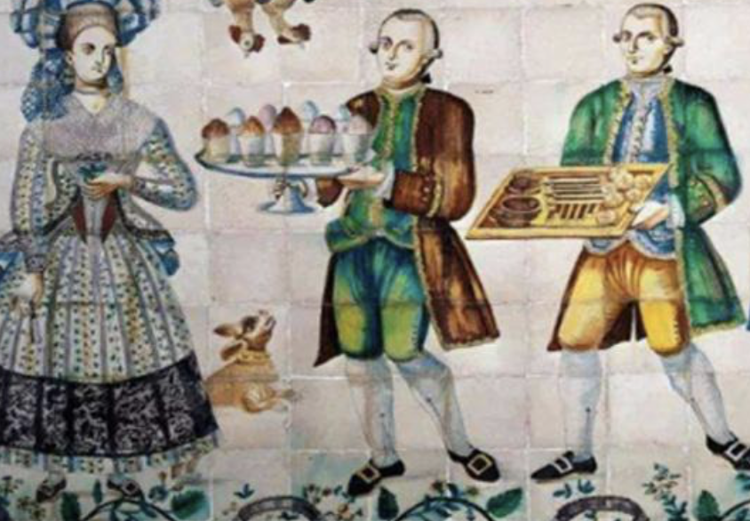

European court communication (17th-18th century)
France:
It was introduced from Italy in the 17th century and Louis XIV listed it as a court luxury.
Britain:
Popular in aristocratic circles in the 18th century, mentioned in the works of Charles Dickens.
America：
President George Washington installed an ice cream machine in the White House to promote its localization.
Improving ice-making technology and using saltpeter and salt to cool things down promoted the popularization of frozen desserts.

Back to the main page